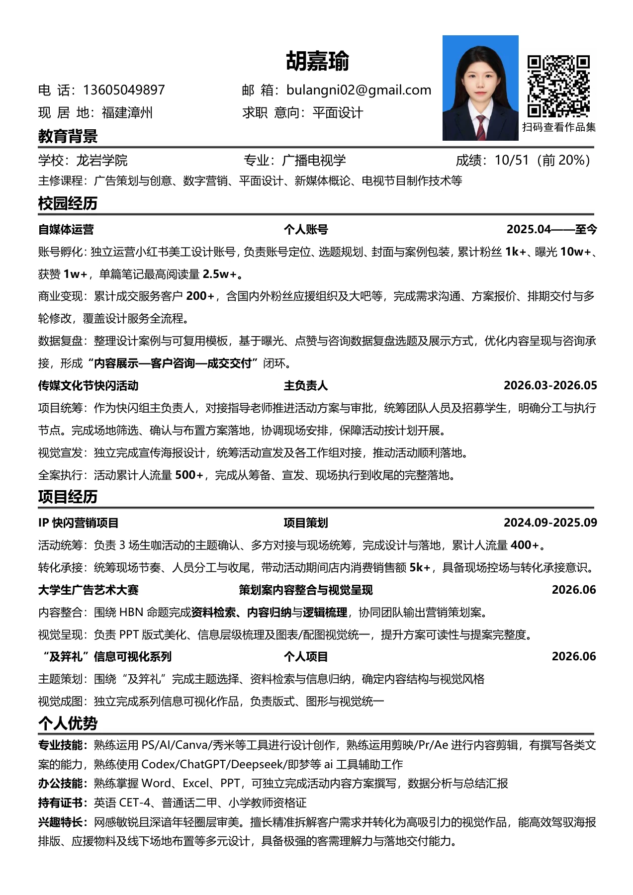

轻触，翻开我的作品档案
拖一拖工作证 · 轻触查看简历
轻扫空白书页，或点上方切换
PERSONAL PROFILE
求职方向：平面设计
喜欢构思活动，也喜欢琢磨视觉，把点子变成具体的方案与画面。

A FEW THINGS I DO
龙岩学院 ／ 广播电视学
相关课程：广告策划与创意、数字营销、平面设计、新媒体概论、电视节目制作技术。
策划案制作、美化与排版
第十二届传媒文化节快闪活动“在现场”
2026.05.21 · 已举办 · 活动主负责人
提出“市集与主理人”概念，构思各环节内容，统筹策划管理、现场布置与物料设计。
累计人流量 500+